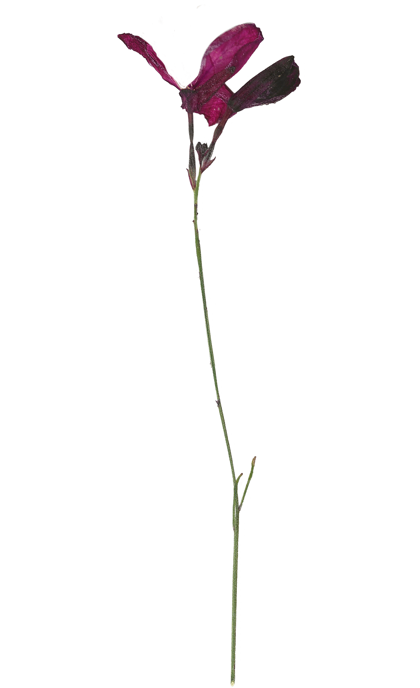

Pressing flora is a craft for the sentimental.
Its physical preservation extends beyond the botanical keepsakes. Pressing flora can revive special occasions, preserve gifts from loved ones, and many more memories that are meant to last.
The art of pressing flora originates from feudal Japan, where Samurai would hone their harmony with nature by creating elaborate pictures from pressed botanical elements. They would preserve the fleeting flora into artifacts that lasted generations.
However, this craft is not limited to intricate creations; it can be as simple as an afternoon activity. Above, there are four steps to creating your personal flora artifact.